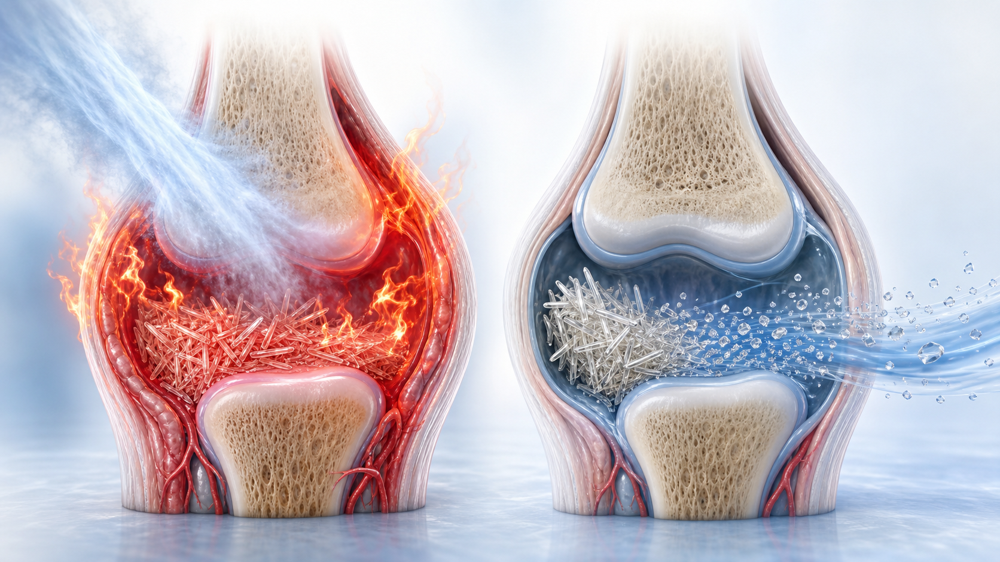

통풍 — 꼭 알아야 할 것만
환자분들이 가장 많이 묻는 것
통풍은 혈액 속 요산이 많아져 관절 안에 결정(結晶)으로 쌓이면서 생깁니다.
그래서 치료도 두 갈래입니다 — 지금의 통증을 가라앉히는 약과, 쌓인 요산을 녹여내는 약.
이 두 가지를 구분해서 아시면 통풍 치료의 절반은 이해하신 것입니다.
지금 발작이 왔다면 먼저 이 네 가지
1
빨리 알려주세요. 발작이 시작되면 되도록 빨리 병원에 알리고 진료를 받습니다.
2
관절을 쉬게 하세요. 다치지 않게 쓰지 말고, 냉찜질을 합니다.
3
핫팩·온찜질은 하지 마세요. 혈관이 넓어져 염증이 오히려 심해집니다.
4
먹던 요산 생성 억제제는 끊지 마세요. 그대로 드시면서 통증 약을 함께 씁니다.
아플 때 잰 요산 수치는 낮게 나올 수 있습니다. 그 수치 하나만으로 통풍이 아니라고
단정할 수 없어, 통증이 완전히 가라앉은 뒤에 다시 검사해 정확한 값을 확인합니다.
약이 두 종류인 이유 — 불끄기 약과 청소 약
| 비교 | 불끄기 약 (급성기 치료) | 청소 약 (요산 생성 억제제) |
|---|---|---|
| 무엇을 하나 | 지금의 통증과 염증을 가라앉힙니다 | 관절에 쌓인 요산 결정을 서서히 녹여냅니다 |
| 어떤 약 | 콜히친 · 소염진통제 · 스테로이드 | 알로푸리놀 · 페북소스타트 등 |
| 언제 먹나 | 발작이 왔을 때 짧게 | 매일 꾸준히 — 고혈압 약처럼 오래 |
| 발작이 오면 | 이 약을 시작합니다 | 끊지 않습니다 — 그대로 계속 |
| 언제 끝나나 | 발작이 가라앉으면 중단 | 목표에 도달해도 대개 계속 (결정이 천천히 녹기 때문) |

발작에 쓰는 약은 세 가지 효과는 서로 대등합니다
어느 약이 더 센가가 아니라, 지금 내 몸 상태에 가장 안전한 약이 무엇인지로 고릅니다.
콩팥 기능, 위장 질환, 당뇨, 심혈관 질환에 따라 선택이 달라집니다.
| 약 | 이런 분께 잘 맞습니다 | 알아두실 점 |
|---|---|---|
| 콜히친 | 대부분의 환자에서 우선 고려 — 적은 용량으로 씁니다 | 설사·복통이 있을 수 있고, 함께 먹으면 안 되는 약이 있어 드시는 약을 모두 알려주세요 |
| 소염진통제 (NSAID) | 콩팥·위장에 문제가 없는 분 | 콩팥에 부담을 주거나 위장 출혈·부종·혈압 상승이 올 수 있습니다 |
| 스테로이드 | 콩팥이 안 좋거나, 위장이 약하거나, 여러 관절이 함께 아픈 분 | 혈당이 일시적으로 오를 수 있어 당뇨약을 드시는 분은 미리 말씀해 주세요 |